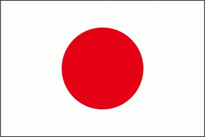

Japón 
Japón es un país insular ubicado en el este de Asia. Está formado por cuatro islas principales: Honshu, Hokkaido, Kyushu y Shikoku, junto con numerosas islas más pequeñas. Japón limita al norte con el mar de Japón, al este con el océano Pacífico, al sur con el mar de China Oriental y al oeste con el mar del Japón.